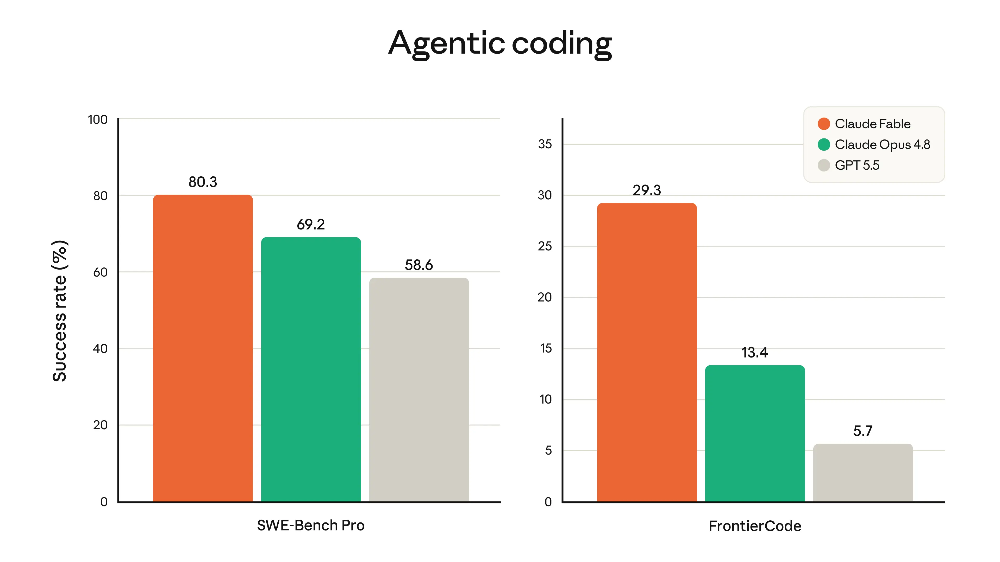
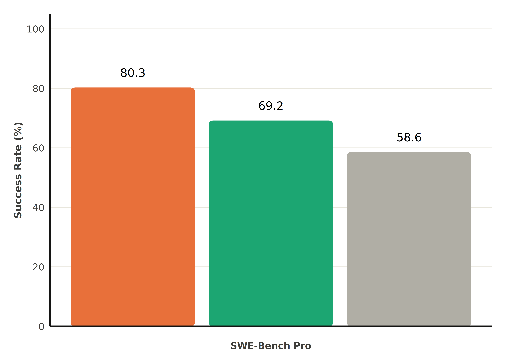
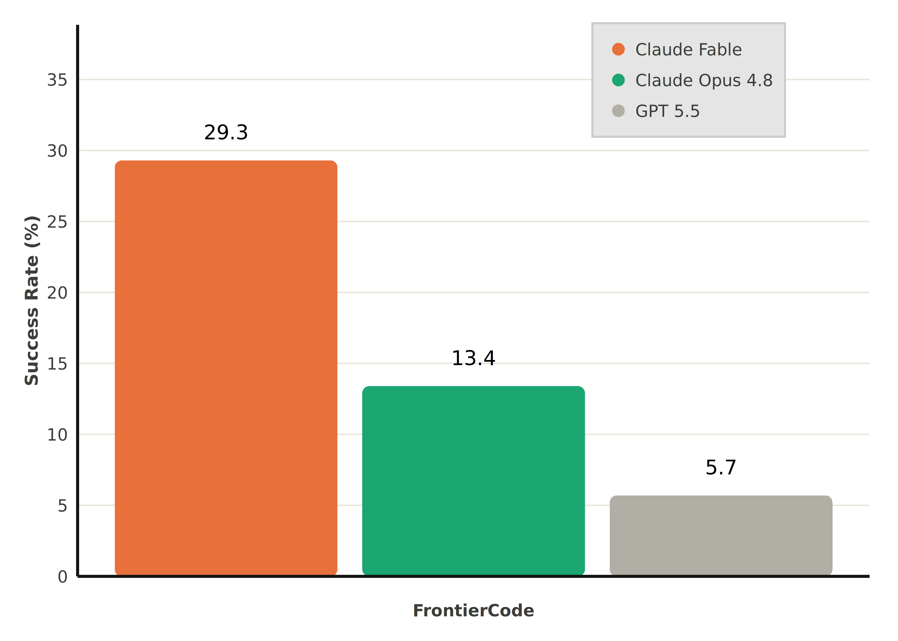
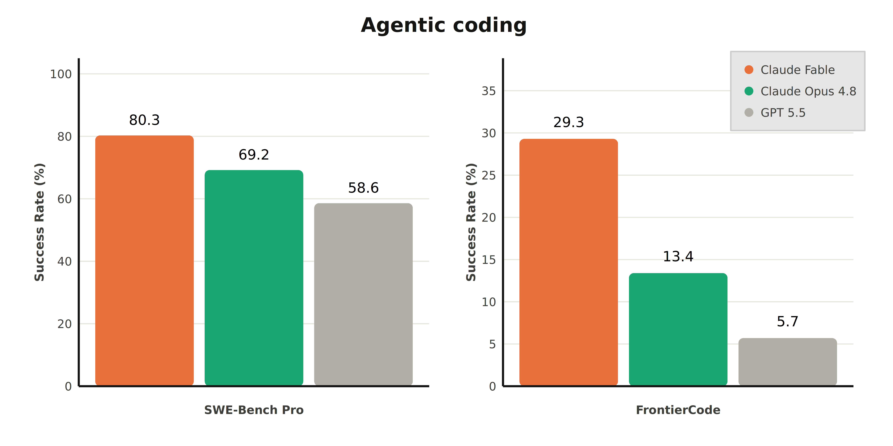
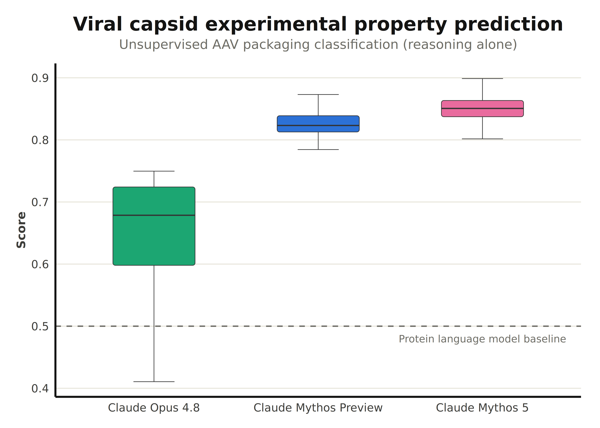
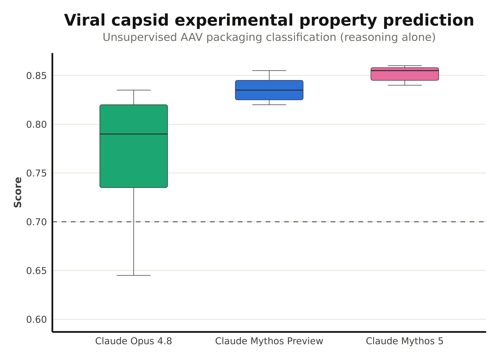

Anthropic’s communication relies on sharp data visualization. This vignette will show how to replicate the general look of their charts using claudeplot.
Agentic Coding benchmark
The first example comes from the Claude Fable 5 announcement post.

Anthropic’s model announcements lean on a recognisable chart: grouped, rounded-top bars comparing models on a coding benchmark, labelled directly, with a clean horizontal-grid theme. This article rebuilds that look from the ground up with claudeplot, gground, and patchwork.
The data
We can extract the data visually from the chart above.
dat <- data.frame(
model = c("Claude Fable", "Claude Opus 4.8", "GPT 5.5"),
benchmark = rep(c("SWE-Bench Pro", "FrontierCode"), each = 3),
performance = c(80.3, 69.2, 58.6, 29.3, 13.4, 5.7)
)
dat
#> model benchmark performance
#> 1 Claude Fable SWE-Bench Pro 80.3
#> 2 Claude Opus 4.8 SWE-Bench Pro 69.2
#> 3 GPT 5.5 SWE-Bench Pro 58.6
#> 4 Claude Fable FrontierCode 29.3
#> 5 Claude Opus 4.8 FrontierCode 13.4
#> 6 GPT 5.5 FrontierCode 5.7Colors
The discrete scales (scale_fill_claude_d()) are the quickest way to colour a chart, but Anthropic’s slides usually pick a deliberate accent per model. Pull specific colours straight from the palettes with claude_palette():
pal_cols <- c(
claude_palette("warm")[1],
claude_palette("claude")[1],
claude_palette("brand")[4]
)
pal_cols
#> [1] "#E8703A" "#1CA672" "#B0AEA5"Left panel
Each panel is a geom_col_rounded() chart with direct value labels in Poppins. The theme_sub_*() helpers (from ggplot2 4.0) let us tweak one part of the theme at a time: here we keep the bottom strip text as the benchmark label, drop the x-axis ticks and title, and bold the model names.
library(gground)
p1 <- ggplot(
subset(dat, benchmark == "SWE-Bench Pro"),
aes(model, performance, fill = model)
) +
geom_round_col(radius = 4) +
geom_text(
aes(label = performance),
size = 4,
family = "Poppins",
nudge_y = 5
) +
scale_x_discrete(labels = c("", "\nSWE-Bench Pro", "")) +
scale_y_continuous(
breaks = seq(0, 100, 20),
limits = c(NA, 100),
expand = expansion(c(0, 0.05))
) +
scale_fill_manual(values = pal_cols) +
guides(fill = "none") +
labs(y = "Success Rate (%)") +
theme_claude() +
theme_sub_axis(ticks = element_blank()) +
theme_sub_axis_x(
title = element_blank(),
text = element_text(face = "bold")
)
p1
Right panel
The companion panel reuses the same recipe, but moves the legend inside the plotting area with theme_sub_legend() and swaps the legend glyph to points:
p2 <- ggplot(
subset(dat, benchmark == "FrontierCode"),
aes(model, performance, fill = model)
) +
geom_round_col(radius = 4, key_glyph = "point") +
geom_text(
aes(label = performance),
size = 4,
family = "Poppins",
nudge_y = 2
) +
scale_x_discrete(labels = c("", "\nFrontierCode", "")) +
scale_y_continuous(
breaks = seq(0, 35, 5),
limits = c(NA, 37),
expand = expansion(c(0, 0.05))
) +
scale_fill_manual(name = NULL, values = pal_cols) +
guides(fill = guide_legend(override.aes = list(shape = 21, size = 3))) +
labs(y = "Success Rate (%)") +
theme_claude() +
theme_sub_axis(ticks = element_blank()) +
theme_sub_axis_x(
title = element_blank(),
text = element_text(face = "bold")
) +
theme_sub_legend(
position = "inside",
position.inside = c(0.65, 0.9),
direction = "vertical",
background = element_rect(fill = "gray90", color = "gray80")
)
p2
Combining the panels
Finally, stitch the two panels together with patchwork and add a centred title themed with theme_claude():
library(patchwork)
(p1 | p2) +
plot_annotation(
title = "Agentic coding",
theme = theme_claude() + theme(plot.title = element_text(hjust = 0.5))
)
That’s the full Anthropic-style benchmark chart: rounded bars, hand-picked accent colours, direct labels in Poppins, and a clean theme_claude() base.
Prediction
The following example replicates the Viral capsid experimental property prediction chart from the Claude Fable 5 announcement post.
The data
To make the example more realistic, we will simulate a data distribution with similar characteristics.
set.seed(987123)
dat <- data.frame(
model_name = rep(
c("Claude Opus 4.8", "Claude Mythos Preview", "Claude Mythos 5"),
each = 200
),
value = c(
(0.75 - rexp(200, 9)),
rnorm(200, mean = 0.825, sd = 0.02),
rnorm(200, mean = 0.85, sd = 0.02)
)
)
lvls <- c("Claude Opus 4.8", "Claude Mythos Preview", "Claude Mythos 5")
dat$model_name <- factor(dat$model_name, levels = lvls)Again, gground pairs nicely with claudeplot with the geom_round_boxplot() geom.
ggplot(dat, aes(model_name, value, fill = model_name)) +
geom_round_boxplot(
linewidth = 0.25,
width = 0.5,
outliers = FALSE
) +
geom_hline(
yintercept = 0.5,
linetype = "dashed",
color = claude_colors[["graphite"]]
) +
annotate(
"text",
x = 3,
y = 0.48,
label = "Protein language model baseline",
family = "Poppins",
size = 3,
color = claude_colors[["graphite"]]
) +
scale_fill_claude_d() +
labs(
title = "Viral capsid experimental property prediction",
subtitle = "Unsupervised AAV packaging classification (reasoning alone)",
x = NULL,
y = "Score"
) +
theme_claude() +
theme_sub_legend(position = "none")
OBS: while ggplot2 (>= 4.0.0) offers finer control of boxplot aesthetics, geom_round_boxplot currently doesn’t support arguments like box.color or staplewidth.
Finally, to make a closer replication, use stat = "identity".
dat <- data.frame(
model_name = c("Claude Opus 4.8", "Claude Mythos Preview", "Claude Mythos 5"),
ymin = c(0.645, 0.82, 0.84),
ymax = c(0.835, 0.855, 0.86),
middle = c(0.79, 0.835, 0.855),
upper = c(0.82, 0.845, 0.858),
lower = c(0.735, 0.825, 0.845)
)
lvls <- c("Claude Opus 4.8", "Claude Mythos Preview", "Claude Mythos 5")
dat$model_name <- factor(dat$model_name, levels = lvls)
ggplot(dat, aes(model_name, fill = model_name)) +
geom_round_boxplot(
aes(
ymin = ymin,
middle = middle,
ymax = ymax,
lower = lower,
upper = upper
),
linewidth = 0.25,
width = 0.5,
outliers = FALSE,
stat = "identity"
) +
geom_hline(
yintercept = 0.7,
linetype = "dashed",
color = claude_colors[["graphite"]]
) +
annotate(
"text",
x = 3,
y = 0.48,
label = "Protein language model baseline",
family = "Poppins",
size = 3,
color = claude_colors[["graphite"]]
) +
scale_y_continuous(
breaks = seq(0.6, 0.9, 0.05),
limits = c(0.6, NA)
) +
scale_fill_claude_d() +
labs(
title = "Viral capsid experimental property prediction",
subtitle = "Unsupervised AAV packaging classification (reasoning alone)",
x = NULL,
y = "Score"
) +
theme_claude() +
theme_sub_legend(position = "none")